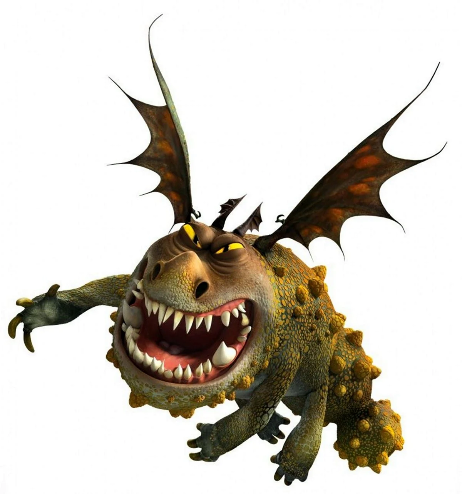
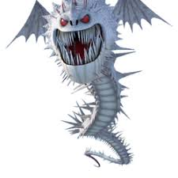
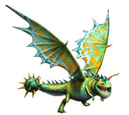
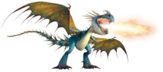
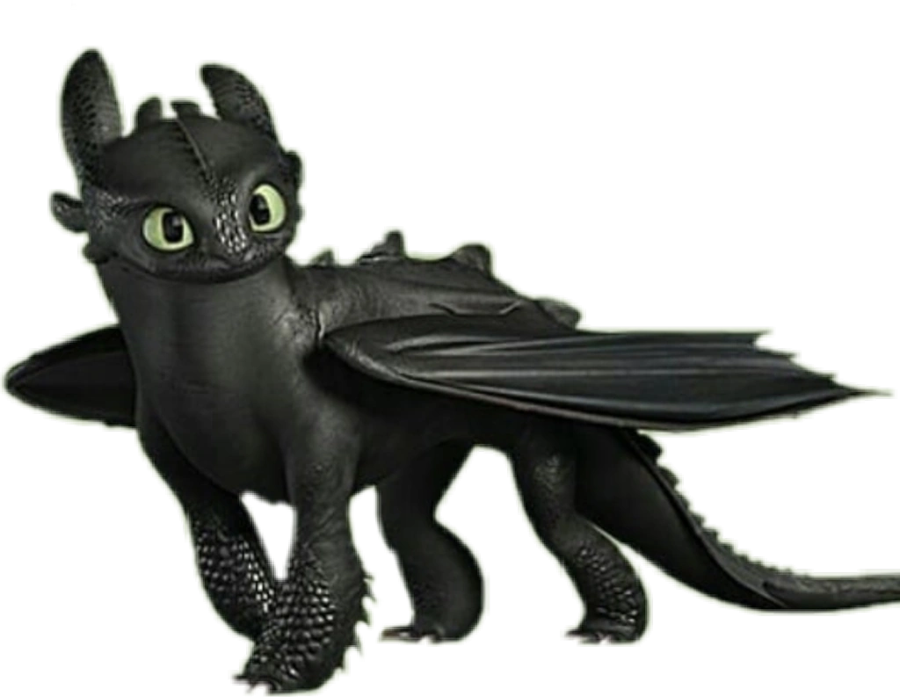
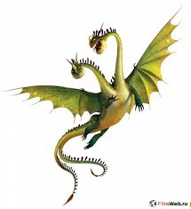
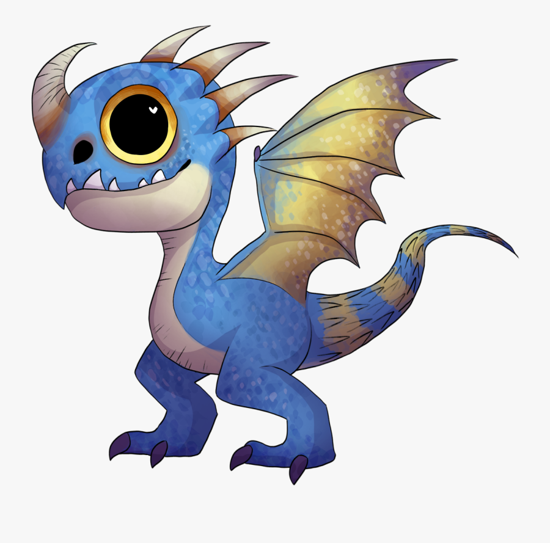
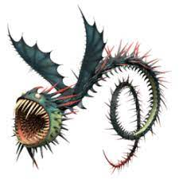
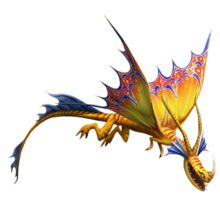

Сарделька. Сарделька (англ. Meatlug, в неправильном переводе — Мяснуша) — это самка Громмеля, которую приручил Рыбьеног. Одна из главных героев мультипликационной вселенной «Как приручить дракона».

Шёпот Смерти. Шёпот Смерти (англ. The Whispering Death) — это один из самых ужасающих, опасных драконов, который принадлежит классу: «Камнееды». Один из таких драконов был приручен Элвином Вероломным.

Песня Смерти. Песня Смерти (англ. Death Song) — это очень красивый и сильный дракон, который принадлежит классу «Загадочные». Впервые появляется в третьем эпизоде сериала «Драконы: Гонки по Краю»

Громгильда. Громгильда (англ. Stormfly) — это самка Злобного Змеевика. Она является одним из главных драконов-героев мультипликационной вселенной: «Как Приручить Дракона».

Беззубик. Беззубик (англ. Toothless) — последняя Ночная Фурия во всём мире и один из главных героев мультипликационной вселенной «Как приручить дракона». Является самым верным и надёжным другом Иккинга. Появляется во всех фильмах, сериалах, играх и комиксах.

Тайфумерaнг. Тайфумерaнг (англ. Typhoomerang) — это вид сильных, довольно больших и опасных драконов, который появляется в четвёртом эпизоде первого сезона сериала «Драконы: Всадники Олуха». Данный вид драконов принадлежит классу: «Кочегары». И это единственный дракон, который употребляет Угрей в пищу.

Подводный Потрошитель. Подводный Потрошитель (англ. Submaripper) (дуб. Судноглот) — это гигантский дракон, который принадлежит классу «Водные». Данный дракон известен как Судноглот, или Подводный Крушитель. Впервые данный дракон появился в игре «Dragons: Rise of Berk» и сериале «Драконы: Гонки по Краю».

Вечнокрыл. Вечнокрыл (англ. Foreverwing) — это легендарный, гигантский и мощный дракон, который принадлежит классу «Загадочные». В первый раз появился в игре «Dragons: Rise of Berk». Также его можно было увидеть в полнометражном мультфильме «Как Приручить дракона» и короткометражке «Книга драконов», во время показа изображений драконов книге.

Левиафорган. Левиафорган (англ. Leviathorgan) — это гигантский, древний морской дракон, живущий в северных полярных морях и глубинах океана.